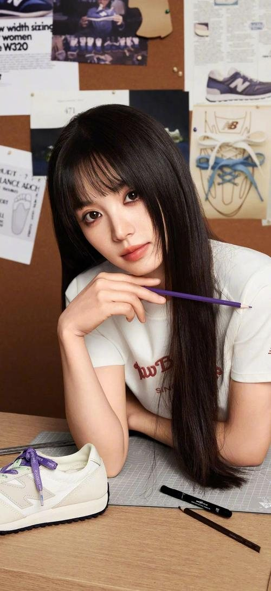

作品
按首播年份排列。前一张表是电视剧，后面分别是配音与综艺。
电视剧
| 年份 | 作品 | 角色 | 类型 |
|---|---|---|---|
| 2018 | 在悠长的时光里等你 | 骆熙 | 网络剧 |
| 2019 | 我的真朋友 | 喜善 | 都市情感 |
| 2020 | 锦绣南歌 | 陆婉 | 古装 |
| 2020 | 如此可爱的我们 | 黄橙子 | 校园青春 |
| 2021 | 我的宠物少将军 | 苏小荷 | 古装言情 |
| 2022 | 姻缘大人请留步 | 上官雅 | 古装 |
| 2022 | 张卫国的夏天 | 尤倩 | 都市 |
| 2022 | 卿卿日常 | 李薇 | 古装轻喜 |
| 2023 | 花轿喜事 | 李玉湖 | 古装 |
| 2023 | 田耕纪 | 连蔓儿 | 古装 |
| 2024 | 半熟男女 | 何知南 | 都市情感 |
| 2024 | 大奉打更人 | 临安 / 柯柯 | 古装 |
| 2025 | 子夜归 | 武祯 | 古装 |
| 2026 | 逐玉 | 樊长玉 | 古装 |
| 2026 | 低智商犯罪 | 李茜 | 悬疑 |
| 2026 | 天才女友 | 林知夏 | 青春爱情 |
| 2026 | 嫁金钗 | 魏娆 / 君黛 | 古装 |
年表据公开资料整理，角色名以播出片头为准。
配音与综艺
| 年份 | 项目 | 内容 |
|---|---|---|
| 2023 | 东方卫视跨年盛典 | 与丞磊合唱《甜甜的》 |
| 2024 | 哈尔的移动城堡 | 为女主角苏菲配音（宫崎骏动画引进版） |
| 2024 | 忙忙碌碌寻宝藏 | 芒果 TV 真人秀，常驻嘉宾 |
| 2026 | 中央广播电视总台春节联欢晚会 | 演唱《串门指南》 |
从李薇开始
2022 年 11 月，《卿卿日常》播出，她饰演的李薇让更多观众记住了这张脸。此前她已经演过《我的真朋友》《锦绣南歌》里的配角，靠《如此可爱的我们》的黄橙子先被一小部分人认出来。
想按顺序看？2020、2022、2024 三年各挑一部就够。
